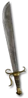

Set - Heyday
Treasure Hunter
6 items, level 61

Kingpin's Wrap
Battle Belt
Defense: 37-42
Required Level: 25
+30% Chance Items Roll Magic or Better
+2 to Light Radius
+25-35 Defense
+10% Increased Attack Speed
+40-60% Enhanced Defense
+50-80% Extra Gold from Monsters

Kingpin's Greaves
Battle Boots
Defense: 39-47
Required Level: 42
+10 to Vitality
+10 to Strength
+30-50% Chance Items Roll Magic or Better
+30 Maximum Durability
+25% Faster Run/Walk Speed
+150-190% Enhanced Defense
Adds 15-25 Damage
Attacker Takes Damage of 5-10

Kingpin's Ire
Russet Armor
Defense: 225-243
Required Level: 42
+1 to All Skills
+X% Chance Items Roll Magic or Better (X = 1.25 x character level)
+160-200% Enhanced Defense
+60 Maximum Durability
Magic Damage Reduced By 10
Repairs 1 Durability in 5 Seconds
(2 items) +10 to Vitality
(3 items) +10 to Energy

Kingpin's Signet
Ring
Required Level: 7
Magic Damage Reduced By 3
Attacker Takes Damage of 3-7
+50-80 to Attack Rating
+10-15% Chance Items Roll Magic or Better
(4 items) +15% Chance Items Roll Magic or Better
(5 items) +44 to Life

Kingpin's Crown
Shako
Defense: 98-141
Required Level: 61
+2 to all Attributes
+X to Mana (X = 1.5 x character level)
+X to Life (X = 1.5 x character level)
+2 to All Skills
+50% Chance Items Roll Magic or Better
+10% Physical Damage Reduction

Kingpin's Blade
Tulwar
Damage: 16-35
Required Level: 35
Socketed (2)
+X% Extra Gold from Monsters (X = 2.5 x character level)
+X% Chance Items Roll Magic or Better (X = 1 x character level)
+15 to Mana
+60-120% Enhanced Weapon Damage
+5-15 to Dexterity
(6 items) Adds 50-120 Damage
Set bonuses
- 2 items: +100% Chance Items Roll Magic or Better
- 3 items: +100% Chance Items Roll Magic or Better
- 4 items: +100% Chance Items Roll Magic or Better
- 5 items: +100% Chance Items Roll Magic or Better
Full set
- +300% Chance Items Roll Magic or Better
- +3 to All Skills
- +35% to All Resistances